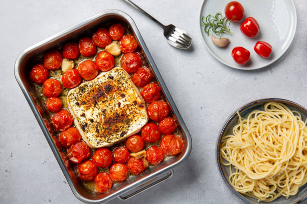

Ingridients:
2 pt. cherry or grape tomatoes
1 shallot, quartered
3 cloves garlic, smashed (optional)
1/2 c. extra virgin olive oil, divided
Kosher salt
Crushed red pepper flakes
1 (8-oz.) block feta
3 sprigs thyme
10 oz. pasta
Zest of 1 lemon (optional)
Fresh basil, for garnish